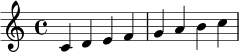

악보
Wikven 사이트의 악보는 사이트를 빌드할 때 한 번 새겨지고, 독자가 받는 것은 그 새겨진 것입니다. Score가 그 일을 하는 확장 기능입니다. 차트처럼 위키 곁에 자기 프로그램을 원하고, 차트와 달리 딸려 오지 않아서 프로그램이 어디 있는지에 더해 확장 기능을 어디서 가져올지도 적어야 합니다.
이 문서가 하나를 새깁니다:

올라가는 음계이고, 문서 안에서는 <svg>입니다. PNG를 원하는 브라우저를 위해 그것도 옆에 있습니다. 둘 다 이 빌드가 쓴 파일이라 읽는 동안 받아오는 것이 없습니다.
사이트가 선언하는 것
extensions:
- Score
config:
ScoreSafeMode: false
ScoreUseSvg: true
ShellboxUrls:
score: http://host.docker.internal:8080
ShellboxSecretKey: a long random string
WikvenRepositories:
Score:
repository: https://github.com/wikimedia/mediawiki-extensions-Score.git
commit: acf9e50a3a5afde00ad755665e70114d63cba64b
ScoreUseSvg는 새긴 것을 사진이 아니라 그림으로 달라고 하고, 종이를 음악 크기로 잘라냅니다. 이게 없으면 한쪽 구석에 음계가 있는 전지 한 장이 나옵니다.
LilyPond이 있는 곳
Score는 LilyPond을 직접 돌리지 않습니다. 명령을 Shellbox에 보냅니다. 위키가 있는 곳이 아닌 데서 명령을 돌리는 것만이 일인 작은 서비스이고, LilyPond은 거기 삽니다. 그래서 사이트 곁에 필요한 것은 LilyPond이 든 Shellbox 하나와 그 주소입니다. 차트에 렌더러가 필요한 것과 똑같습니다.
ScoreSafeMode의 답도 그것입니다. LilyPond은 2.23.12부터 안전 모드가 없고 <score>는 LilyPond이 실행할 프로그램이라, Score는 여러분이 알고 있다고 말하기 전까지 아무것도 그리지 않습니다. LilyPond이 자기 컨테이너 안에 있을 때 false로 두는 것은 정직한 선택이고, 샌드박스가 있는 이유가 그것입니다.
ShellboxSecretKey는 MediaWiki가 빼도 된다고 하지만 여기서는 아닙니다. 이게 없으면 빌드가 명령을 보내지 않고 조용히 자기가 돌리는데, 베이크에는 LilyPond이 없으니 문서가 음악 대신 오류로 찹니다. 같은 문자열이 Shellbox 쪽 설정 파일에도 들어갑니다.
ShellboxUrls 아래의 키는 score입니다. Score가 그 서비스를 부르는 이름이지요. score-lilypond이 아닙니다. 그건 그 서비스에 요청하는 경로 이름이고, 그걸 적으면 똑같이 조용히 실패합니다.
이 사이트는 그런 서비스를 둘 돌립니다. 차트 렌더러와 이것이지요. 그래서 둘 다 host.docker.internal이라 부를 수 없어, 자기 설정 파일에서는 이쪽을 score-shellbox라고 부릅니다. 서비스가 하나라면 위에 적은 이름을 쓰면 됩니다. 어떤 이름이 어떤 베이크 방식에 붙는지는 차트를 보세요.
음악 쓰기
<score>\relative c' { c d e f g a b c }</score>
태그 사이는 LilyPond이고, lang="ABC"를 주면 ABC로 쓸 수 있습니다. LilyPond이 읽지 못하는 음악이 있으면 음표 자리에 오류를 퍼블리시하는 대신 빌드가 멈춥니다.